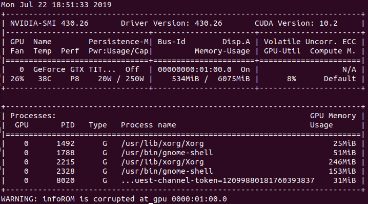

Install Docker and Nvidia-Docker2 for ML
Test Env.
- Ubuntu 18.04
Remove nouveau Driver
이 부분을 생략하고 설치해도 됨. 오히려 이 부분을 수행시 18.04에서 youtube등의 수행에 문제가 발생한다는 지적이 있음.
- nouveau 드라이버가 자체적으로 설치되어 있음.
- 해당 드라이버는 ML을 위한 gpu연산등을 지원하지 않으므로 제거하고 nvidia 드라이버를 설치해야함.
lsmod | grep nouveau- 위의 명령어 실행으로 nouveau 의 설치 유무 확인하고 설치된 경우 실행을 막기 위해 다음의 절차를 수행함.
- nouveau 드라이버 실행 중지를 위해
blacklist-nouveau.conf파일 생성..sudo vi /etc/modprobe.d/blacklist-nouveau.conf- 위의 명령어 수행후 다음과 같이 파일 내용 기재하고 재부팅하여 nouveau 제거 완료.
blacklist nouveau options nouveau modset=0- 아래의 명령어 수행 후 재부팅함.
sudo update-initramfs -u sudo reboot
CUDA 9.2 이상의 버전과 호환 가능한 nvidia 드라이버 설치
sudo add-apt-repository ppa:graphics-drivers/ppa
sudo apt update
sudo ubuntu-drivers autoinstall
sudo reboot
- 위의 명령어 수행후
nvidia-smi로 확인  - 현재 430.26 버전의 드라이버와 CUDA 10.2가 설치됨(2019.07.22당시)
Docker설치
nvidia-docker2설치를 위해 기존 설치된 docker제거.
sudo apt-get remove docker docker-engine docker.io
nvidia-docker2 설치를 위해 docker-ce 설치.
sudo apt-get update
sudo apt-get install \
apt-transport-https \
ca-certificates \
curl \
gnupg-agent \
software-properties-common
curl -fsSL https://download.docker.com/linux/ubuntu/gpg | sudo apt-key add -
sudo add-apt-repository \
"deb [arch=amd64] https://download.docker.com/linux/ubuntu \
$(lsb_release -cs) \
stable"
sudo apt-get update && sudo apt-cache search docker-ce
sudo apt-get install docker-ce
sudo usermod -aG docker $USER
$USER는 현재 사용중인 계정 명으로 바꾸어야 함.
nvidia-docker2 설치
ubuntu계열의 nvidia-docker2 설치
# Add the package repositories
distribution=$(. /etc/os-release;echo $ID$VERSION_ID)
curl -s -L https://nvidia.github.io/nvidia-docker/gpgkey | sudo apt-key add -
curl -s -L https://nvidia.github.io/nvidia-docker/$distribution/nvidia-docker.list | sudo tee /etc/apt/sources.list.d/nvidia-docker.list
sudo apt-get update && sudo apt-get install -y nvidia-container-toolkit
sudo systemctl restart docker
docker image 를 받아와서 테스트.
docker hub의 NVIDIA의 이미지 버전들에서 적절한 이미지를 pull.
다음의 명령어는 CUDA 10.1과 cuDNN 7 버전의 Container에 해당하는 image를 받은 것임.
docker pull nvidia/cuda:10.1-cudnn7-devel-ubuntu18.04
docker run -ti --gpus all --rm nvidia/cuda:10.1-cudnn7-devel-ubuntu18.04 bash
Start a GPU enabled container on two GPUs
$ docker run --gpus 2 nvidia/cuda:9.0-base nvidia-smi
Starting a GPU enabled container on specific GPUs
$ docker run --gpus device=1,2 nvidia/cuda:9.0-base nvidia-smi $ docker run --gpus device=UUID-ABCDEF,1 nvidia/cuda:9.0-base nvidia-smi
Specifying a capability (graphics, compute, ...) for my container
Note this is rarely if ever used this way
$ docker run --gpus all,capabilities=utility nvidia/cuda:9.0-base nvidia-smi
이후 nvidia-smi를 수행해서 최종 확인.